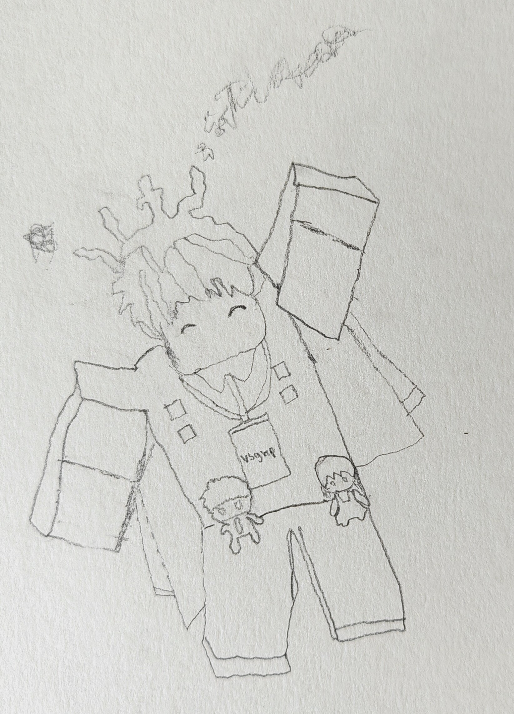

vsgmpchannel (Kuma)
เจ้าของ Kurokuma Production 🟪⬛
ชื่อเรียกเล่นKuma, ภูมิ
อายุ14
เพศชาย
เกิดวันที่1-1-2012
Reverse Engineering ทุกอย่าง
เป็นคนขี้เผือก อยากจะรู้ไปหมดว่าสิ่งนี้มาจากอะไร มาได้ยังไง ทำยังไง และเอามาจากไหน เเม้เเต่นิสัยคนรอบตัว
Perfectionism ขั้นสุด
ลบ ปั้น และทำโมเดลใหม่ 4 รอบ เพราะยังไม่สวยพอ แม้รายละเอียดนั้นหลายคนอาจไม่ได้สังเกต
Overthink + OCD Lastboss
คิดลึก คิดไปเรื่อย คิดจนเครียด ทำงี้จะโดนว่าไหม จะเป็นอะไรไหม
Solo Builder
ชอบทำงานคนเดียว เพราะมันอิสระ ปล่อย idea ในหัวเราได้เต็มที่